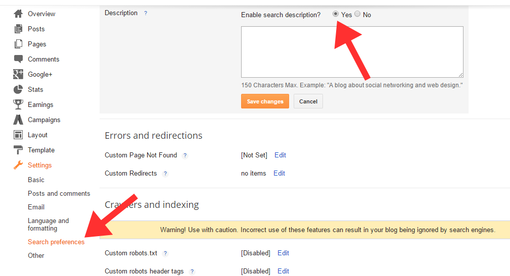
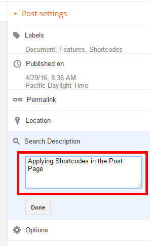

First of all, thank you for download and using this theme. To make your experience pleasant, we've added as much info as needed in this documentation. If you're stuck with anything, please refer to support forums.
Coffee AMP is a Accelerated Mobile Pages (AMP) for Blogger Template. It's a simple design, just few seconds to load and get everything running. It's just share for free. This theme support with microforats, microformats 2, microdata and responsive design.
When you are ready to install a theme, you must first upload the theme file. The theme file can be uploaded in one way .
This step to make blog post type enable.
<link href='https://4.bp.blogspot.com/-coH8_mrHZQY/WaGu_F4KK8I/AAAAAAAACw0/ejVfz5tewxkLa1NCV6gyZiMEKPkswdKHQCLcBGAs/s1600/favico1.png' rel='apple-touch-icon' sizes='57x57'/> <link href='https://4.bp.blogspot.com/-coH8_mrHZQY/WaGu_F4KK8I/AAAAAAAACw0/ejVfz5tewxkLa1NCV6gyZiMEKPkswdKHQCLcBGAs/s1600/favico1.png' rel='apple-touch-icon' sizes='60x60'/> <link href='https://4.bp.blogspot.com/-coH8_mrHZQY/WaGu_F4KK8I/AAAAAAAACw0/ejVfz5tewxkLa1NCV6gyZiMEKPkswdKHQCLcBGAs/s1600/favico1.png' rel='apple-touch-icon' sizes='72x72'/> <link href='https://4.bp.blogspot.com/-coH8_mrHZQY/WaGu_F4KK8I/AAAAAAAACw0/ejVfz5tewxkLa1NCV6gyZiMEKPkswdKHQCLcBGAs/s1600/favico1.png' rel='apple-touch-icon' sizes='76x76'/> <link href='https://4.bp.blogspot.com/-ekrJ1MoRAx8/WZWH0wUordI/AAAAAAAACrs/9IipGLtQUQ0v61slnwbDzQGAaC2AEoeVwCEwYBhgL/s1600/favico2.png' rel='apple-touch-icon' sizes='114x114'/> <link href='https://4.bp.blogspot.com/-ekrJ1MoRAx8/WZWH0wUordI/AAAAAAAACrs/9IipGLtQUQ0v61slnwbDzQGAaC2AEoeVwCEwYBhgL/s1600/favico2.png' rel='apple-touch-icon' sizes='120x120'/> <link href='https://4.bp.blogspot.com/-ekrJ1MoRAx8/WZWH0wUordI/AAAAAAAACrs/9IipGLtQUQ0v61slnwbDzQGAaC2AEoeVwCEwYBhgL/s1600/favico2.png' rel='apple-touch-icon' sizes='144x144'/> <link href='https://4.bp.blogspot.com/-ekrJ1MoRAx8/WZWH0wUordI/AAAAAAAACrs/9IipGLtQUQ0v61slnwbDzQGAaC2AEoeVwCEwYBhgL/s1600/favico2.png' rel='apple-touch-icon' sizes='152x152'/> <link href='https://4.bp.blogspot.com/-ekrJ1MoRAx8/WZWH0wUordI/AAAAAAAACrs/9IipGLtQUQ0v61slnwbDzQGAaC2AEoeVwCEwYBhgL/s1600/favico2.png' rel='apple-touch-icon' sizes='180x180'/> <link href='https://4.bp.blogspot.com/-ekrJ1MoRAx8/WZWH0wUordI/AAAAAAAACrs/9IipGLtQUQ0v61slnwbDzQGAaC2AEoeVwCEwYBhgL/s1600/favico2.png' rel='icon' sizes='192x192' type='image/png'/> <link href='https://4.bp.blogspot.com/-GAxpu0rFJdY/WZWHLfMT_1I/AAAAAAAACrk/BuA2wKDuMe8_TSrhV1CFPWOWgF-VwNm1wCLcBGAs/s1600/favico.png' rel='icon' sizes='32x32' type='image/png'/> <link href='https://4.bp.blogspot.com/-GAxpu0rFJdY/WZWHLfMT_1I/AAAAAAAACrk/BuA2wKDuMe8_TSrhV1CFPWOWgF-VwNm1wCLcBGAs/s1600/favico.png' rel='icon' sizes='96x96' type='image/png'/> <meta content='https://4.bp.blogspot.com/-GAxpu0rFJdY/WZWHLfMT_1I/AAAAAAAACrk/BuA2wKDuMe8_TSrhV1CFPWOWgF-VwNm1wCLcBGAs/s1600/favico.png' name='msapplication-TileImage'/>
<meta content='XXXXX' name='me Author'/> <link href='https://plus.google.com/XXXX' rel='author me'/> <link href='https://plus.google.com/XXXX' rel='publisher'/>
<meta content='XXXX' name='google-site-verification'/>
<meta content='XXXX' property='fb:admins'/> <meta content='XXXX' property='fb:profile_id'/> <meta content='1429806127066799' property='fb:app_id'/>
<meta content='@XXXXX' name='twitter:creator'/>
Note: Before your cards show on Twitter, you must first have your domain approved. Fortunately, it's a super-easy process. After you implement your cards, simply enter your sample URL into the validation tool. After checking your markup, select the "Submit for Approval" button. Go Here : Cards Validator for testing and approval
<amp-social-share data-param-app_id='1429806127066799' height='35' type='facebook' width='35'/>
<amp-img alt='author' class='u-photo photo' height='100' itemprop='image' src='XXXX' width='100'/>
<a class='authorname g-profile url uid u-url u-uid' href='XXXX' itemprop='url' rel='me author noreferrer' target='_blank' title='XXXX'> <span class='fn n p-name' itemprop='name'>XXXX</span> </a>
<div class='about-author p-note note'>XXXX</div>
<a href='https://www.blogger.com/follow.g?view=FOLLOW&blogID=XXXX' rel='noreferrer' target='_blank' title='Follow This Blog'> <span class='fa-stack'> <i aria-hidden='true' class='fa fa-circle fa-stack-2x fa-inverse'/> <i aria-hidden='true' class='fa fa-random fa-stack-1x'/> </span> Follow This Blog </a>
<a href='http://eepurl.com/XXXX' rel='noreferrer' target='_blank' title='Follow This Blog'> <span class='fa-stack'> <i aria-hidden='true' class='fa fa-circle fa-stack-2x fa-inverse'/> <i aria-hidden='true' class='fa fa-random fa-stack-1x'/> </span> Subscribe Blog </a>
<a href='https://plus.google.com/XXXX' itemprop='sameAs' rel='me noreferrer' target='_blank' title='Google Plus'> <a href='https://www.facebook.com/XXXX' itemprop='sameAs' rel='me noreferrer' target='_blank' title='Facebook'> <a href='https://twitter.com/XXXX' itemprop='sameAs' rel='me noreferrer' target='_blank' title='Twitter'> <a href='https://www.instagram.com/XXXX' itemprop='sameAs' rel='me noreferrer' target='_blank' title='Instagram'> <a href='https://github.com/XXXX' itemprop='sameAs' rel='me noreferrer' target='_blank' title='Github'> <a href='https://id.pinterest.com/XXXX' itemprop='sameAs' rel='me noreferrer' target='_blank' title='Pinterest'> <a href='mailto:XXXX' itemprop='sameAs' rel='me noreferrer' target='_blank' title='email'> <a href='https://XXXX' itemprop='sameAs' rel='me noreferrer' target='_blank' title='official web'>
Follow the instructions below:
And this:

<amp-analytics id='analytics1' type='googleanalytics'>
<script type='application/json'>
{
"vars": {
"account": "UA-XXXXX-1"
},
"triggers": {
"trackPageview": {
"on": "visible",
"request": "pageview"
}
}
}
</script>
</amp-analytics>
In Dashboard > Layout > Blog Posts, Click on "Edit" and applicate all customizing like in folder SETTINGS.
First Go to Dashboard > Layout > then add New Gadget > Labels > select Cloud Option, and you can select custom labels you want to show as Tags.
First Go to Dashboard > Layout > then add New Gadget > Popular Posts > select Thumbnails and Number of Posts
<div dir="ltr" style="text-align: left;" trbidi="on">
<noscript><img height='282' src='https://1.bp.blogspot.com/-mo2fFID_mYk/WaSg5Aq0DeI/AAAAAAAACxw/mTJ6XNdoAzgPTAFzF-WMzMgcJ-EC5TYZwCEwYBhgL/s640/AMP_WordPress_AMP_Project1.jpg' width='640'/></noscript>
<amp-img height='282' layout='responsive' src='https://1.bp.blogspot.com/-mo2fFID_mYk/WaSg5Aq0DeI/AAAAAAAACxw/mTJ6XNdoAzgPTAFzF-WMzMgcJ-EC5TYZwCEwYBhgL/s640/AMP_WordPress_AMP_Project1.jpg' width='640'></amp-img>
<amp-youtube data-videoid='5Yjoe54vzwE' height='270' layout='responsive' width='480'></amp-youtube>
note : other component can see at AMP Comonents
Every add new gadget, dont forget to delete <name quickedit/> code from Edit HTML.
Find code bellow, change rachmat-yanuarsyah with your ID of Disqus comment.
<h4><span class='show-more disqus-hide'>Add Comments</span></h4> <span class='disqus-box'> <amp-iframe expr:src='https://rawgit.com/rachmatyanuarsyah/disqus-html/master/coffee-trick.html?shortname=rachmat-yanuarsyah&fontBodyColor=d2d0cb&fontBodyFamily=sans-serif&fontLinkColor=7a9ec7&url=" + data:blog.canonicalUrl' frameborder='0' height='300' layout='responsive' resizable='resizable' sandbox='allow-scripts allow-same-origin allow-modals allow-popups allow-forms' width='600'> <div aria-label='Disqus Comments' overflow='' role='button' tabindex='0'>Disqus Comments</div> </amp-iframe> </span>
Another blog in all arround world, thanks for the tutorials.
Special thanks to :